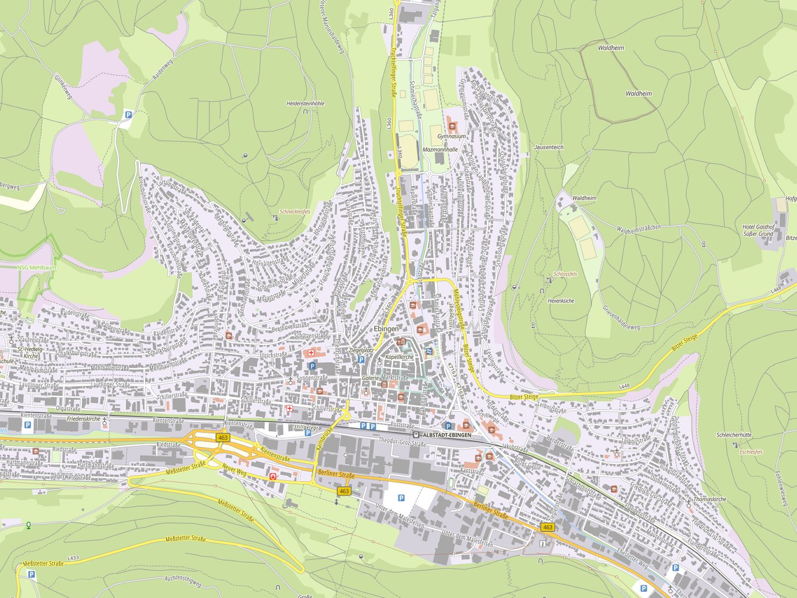
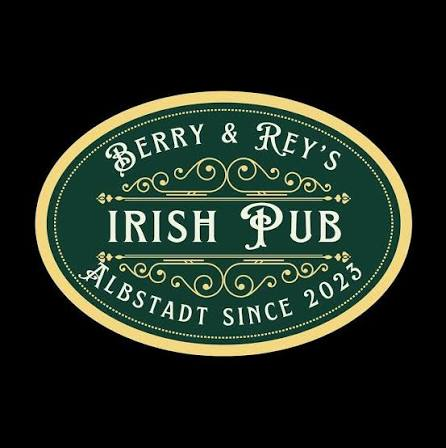

Schlussbergturm
Kategorie: Kultur & Geschichte
Historische Burganlage mit schönem Blick über die Stadt.
Kategorie: Kultur & Geschichte
Historische Burganlage mit schönem Blick über die Stadt.
Kategorie: Essen & Trinken
Gemütlicher Pub in Ebingen mit Getränken und Snacks.

[Kartenbereich - wird in Phase 2 via JavaScript geladen]
(klicken simuliert Aufrufen einer Aktivität)

Kategorie: Essen & Trinken
Gemütlicher Pub in Ebingen mit Getränken und Snacks.